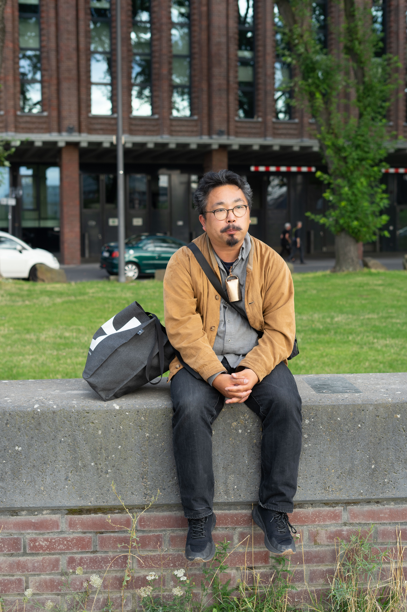
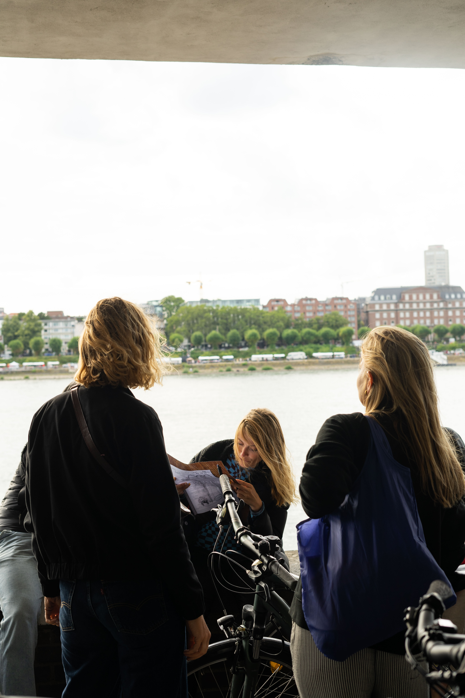
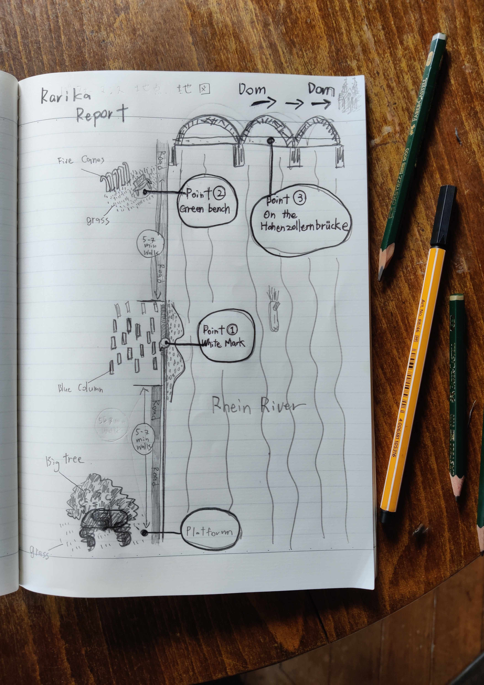
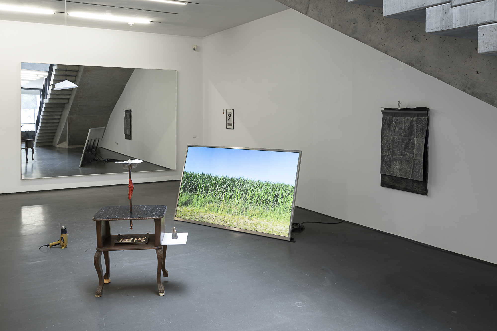
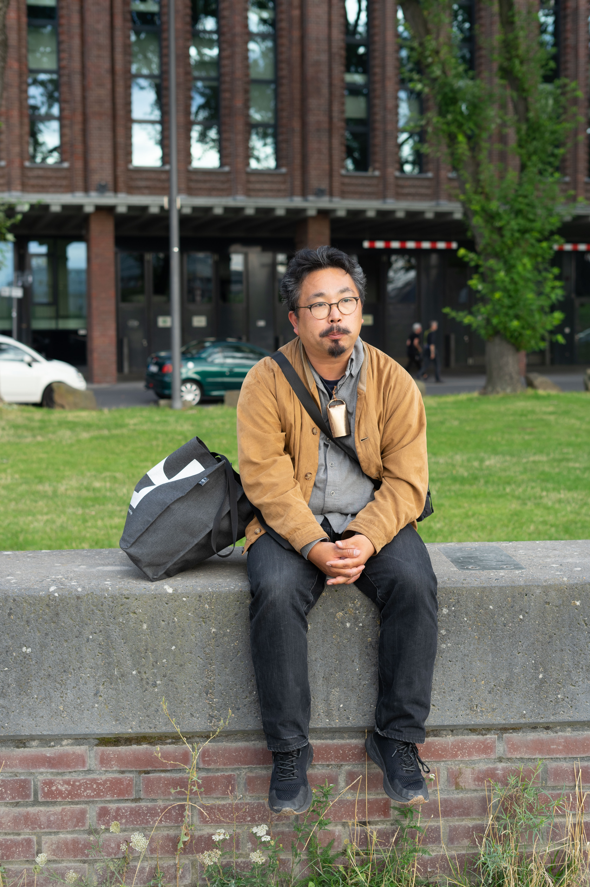
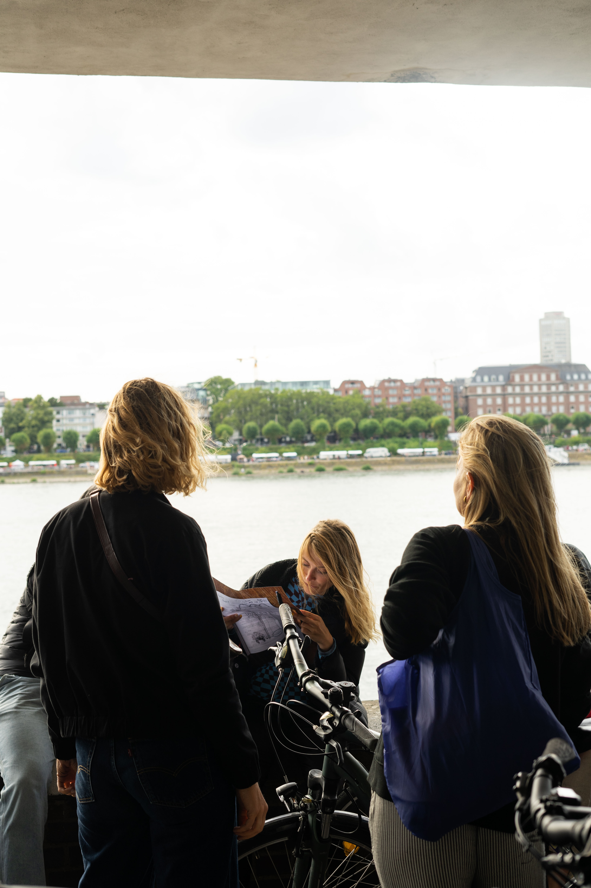
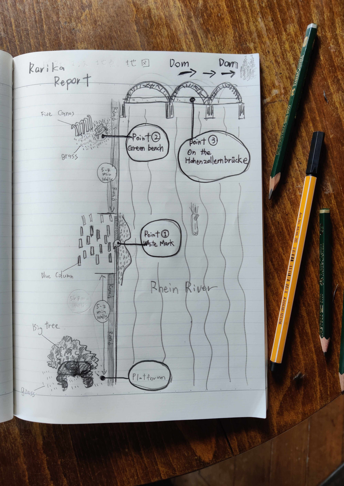
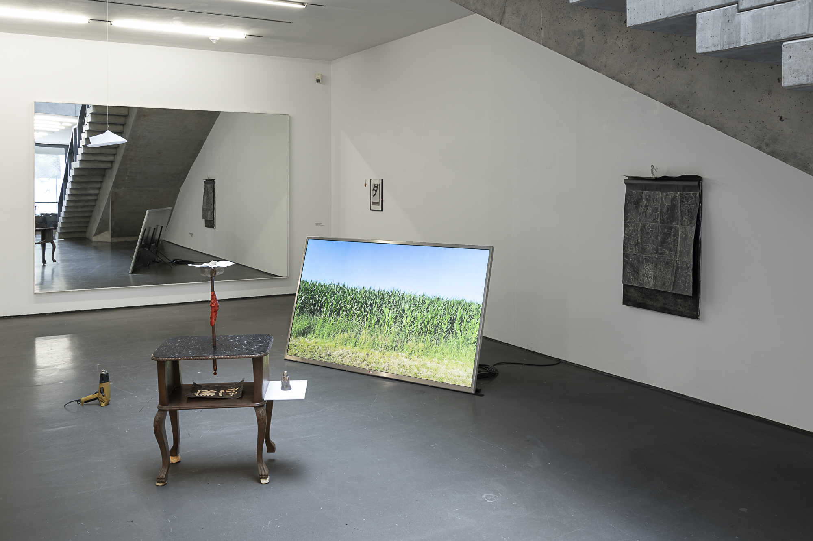
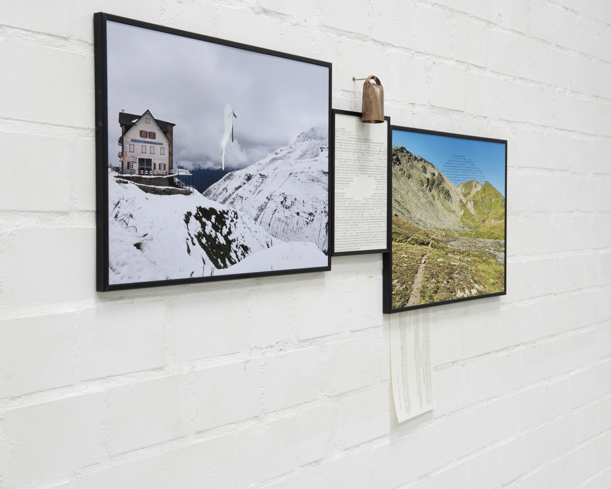
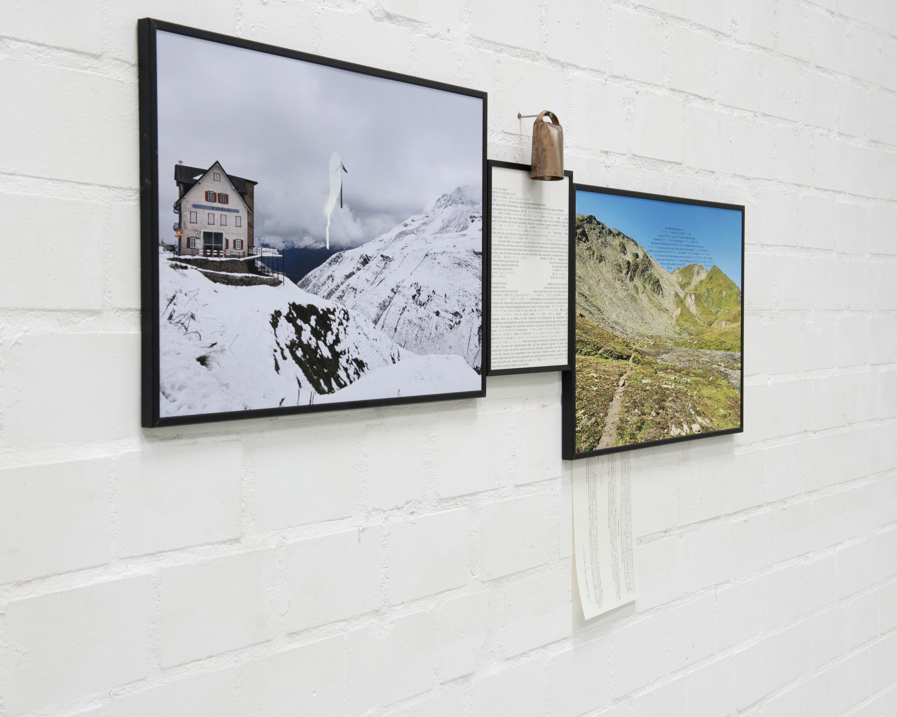

Soya Arakawa / 荒川創也
For recent exhibitions and updates, visit my Instagram:
@soya_ar.tacolv
Born: 1984, Hamamatsu, Japan
Lives and works in: Krefeld, Germany
Soya Arakawa, born in Hamamatsu, Japan, in 1984, is an artist based in Krefeld, Germany. Trained at Kanazawa College of Art and Kunstakademie Düsseldorf under Prof. Rita McBride, he explores sculpture, drawing, installation, and performance. His practice integrates choreography with spatial composition, creating dynamic installations and performance scores that often form the basis for live interdisciplinary works, where he performs as a singer, dancer, or instrumentalist. Arakawa’s art engages with themes of cultural identity, fiction, and self-mythology, blending contemporary and traditional forms.
Downloads
Selected Works


 







 



Performance Videos
Contact
© Soya Arakawa 2025